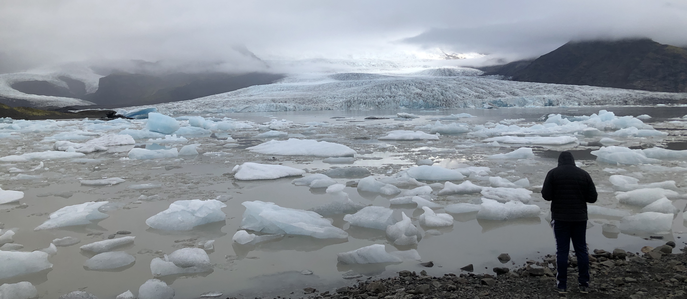
ICELAND
Let's forget every single stress and feel nature
Let's forget every single stress
and
feel nature
Explore this Country
一車線の道路を運転して見えるのは何もない大地だけ。
非日常を味わうには最高の国。

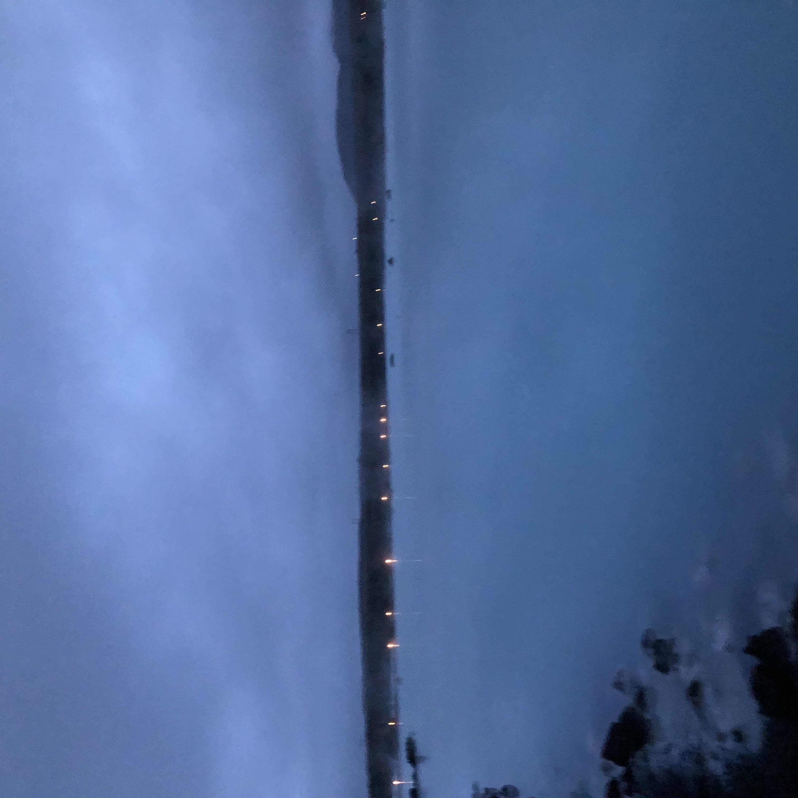Blue Lagoon
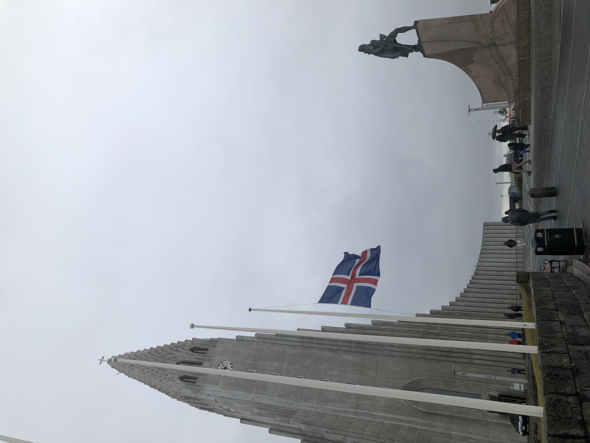Reykjavik
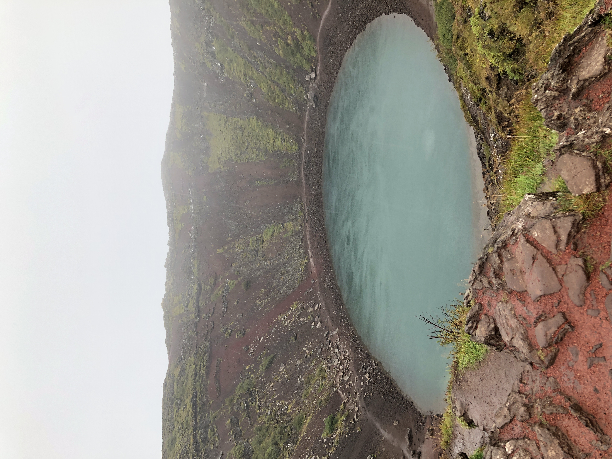Kerið
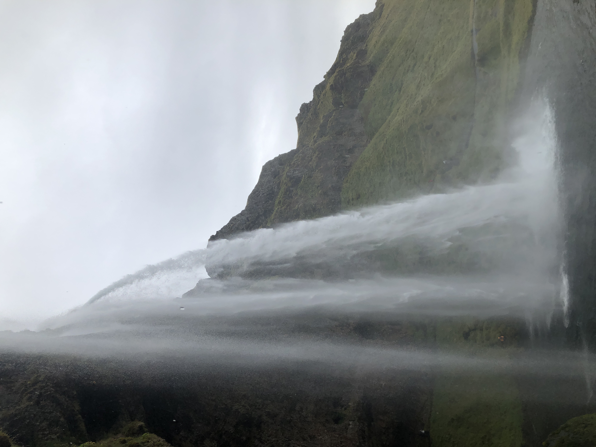eljalandsfoss
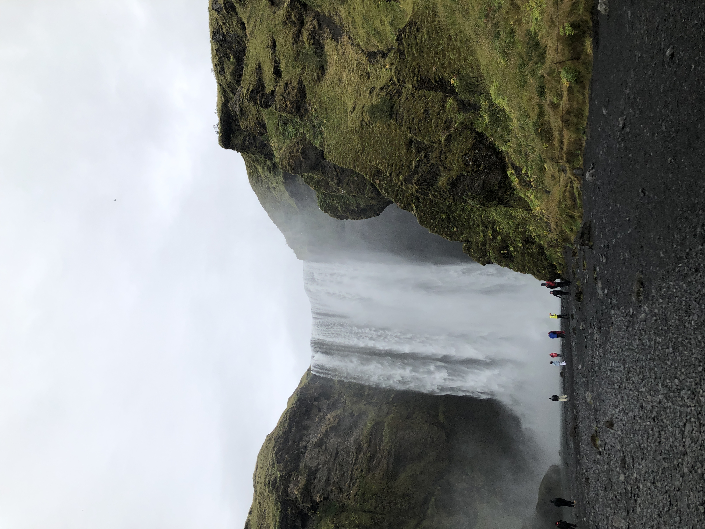Skógafoss
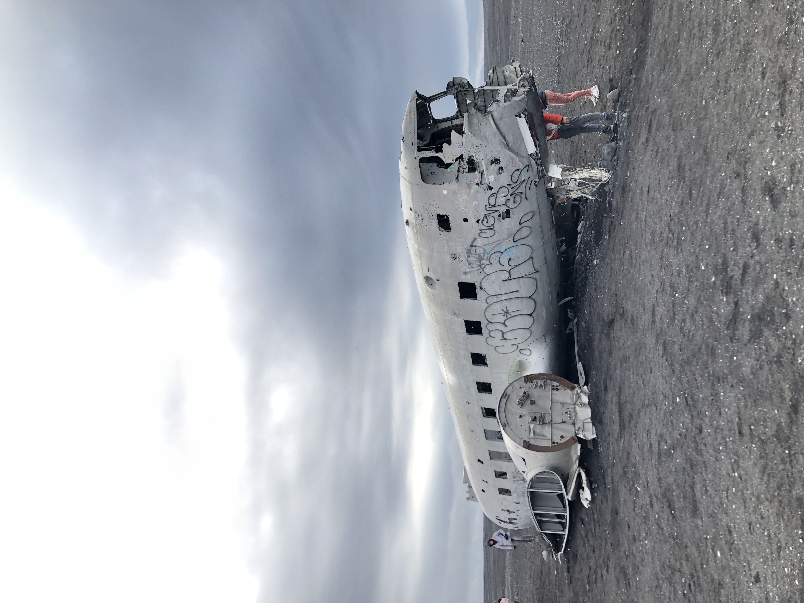Crushed Plane
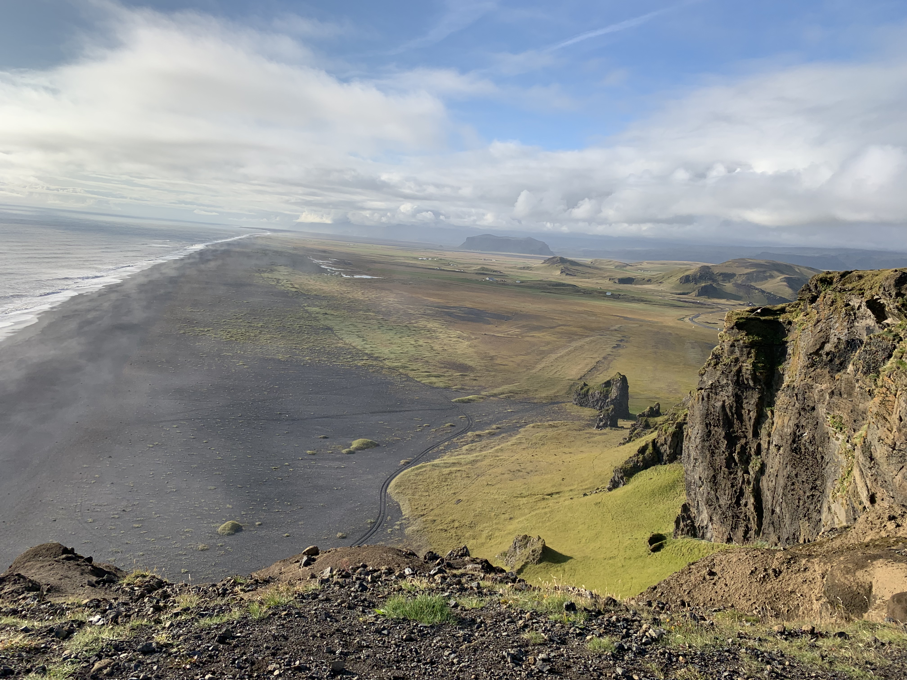Dyrhólaey
 Háöldukvísl
Háöldukvísl
 Diamond Beach
Diamond Beach
Háöldukvísl
Diamond Beach
What is Iceland like?
アイスランド情報
- 気候
- 物価
- レストラン
- ビザ、チップ、コンセント、wifi
- 移動手段
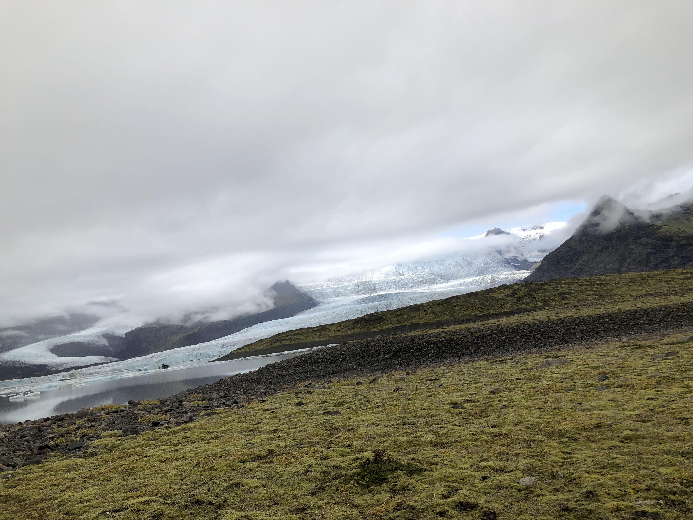
アイスランドの気候は予測不能です。運転してても10分後には天気が変わります。
めっちゃ良い天気でも知らない間に雲が降りてきて、大雨になります。
風を遮るものは何もないので、運転しててももろに風の影響を受けます。
僕は経験したことないですが冬だとブリザードにあって、
国全体の道路が封鎖されることもあるみたいです。
雪だけでなく、雨も急に降り出します。気温も低いので、体調を崩さないように気をつけて下さい！
フライトにも影響するので、旅行の予定が崩れないと良いですが、、
ネガティブなことだけでなく、運がよければ最高のサンセットやオーロラが見えると思います！
めっちゃ良い天気でも知らない間に雲が降りてきて、大雨になります。
風を遮るものは何もないので、運転しててももろに風の影響を受けます。
僕は経験したことないですが冬だとブリザードにあって、
国全体の道路が封鎖されることもあるみたいです。
雪だけでなく、雨も急に降り出します。気温も低いので、体調を崩さないように気をつけて下さい！
フライトにも影響するので、旅行の予定が崩れないと良いですが、、
ネガティブなことだけでなく、運がよければ最高のサンセットやオーロラが見えると思います！
500mlの水一本で450円ぐらいします。火山でできてる国なので水は硫黄の味します笑
普通のご飯もなかなかの値段します。2000円だと安い方だと思います。
泊まるホテルも慎重にならないと行けないかもしれません。
レンタカーで周遊する場合は、ガソリン代もかかることをお忘れなく！
食事代にもお金がかかるので、スーパーで食材を買って自炊をすることで食費を抑えれると思います。
僕と友達は、カップラーメンやレトルトなどを持って行って食べてました。もちろん現地のご飯も食べましたよ笑
僕のおすすめは3つあるんですが、ここでは2つ紹介します。
あと1つは#capitalで紹介してるので、確認してみて下さい。
個人的に海外のご飯は、同じ出身国の人が美味しいと言ってるものしか信用できないです笑
僕の場合だと、日本人以外の人が美味しいって言ってても信用できないです。日本食が世界で一番美味しいと思ってるので。
全員ではないですけど、アメリカ人て何でも美味しいって言うんで笑
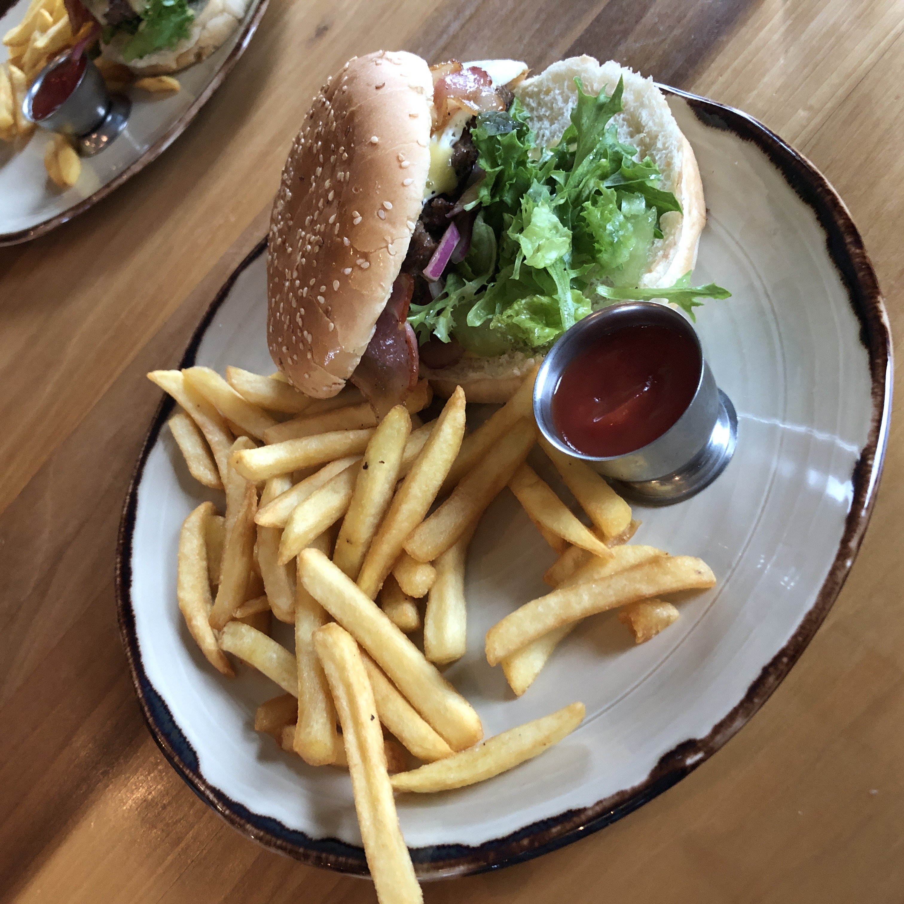
1つ目は、"Farm Hotel efstidalur"(エフスティダルル)です。
#ホームページ
一緒に行った友達が知ってたので、行ってみました。
ここはホテルの中にあるレストランです。農場なので新鮮な食事を提供してくれると人気なレトランです。
値段もそこまで高くなかったと思います。物価が高いのは前提の話として笑
オーガニックのホームメイドのアイスクリームも有名みたいで、
飼育してる牛から取れた新鮮あミルクを使ってるらしいです。寒かったので僕は食べなかったですけど笑
ここのハンバーガーはめっちゃ美味しかったです。
ホテルなので、ここで一泊して美味しいご飯を食べて旅するのもありですね！！
部屋もめっちゃ綺麗そうでした！個人的にはここで一泊してみたいです。
一緒に行った友達が知ってたので、行ってみました。
ここはホテルの中にあるレストランです。農場なので新鮮な食事を提供してくれると人気なレトランです。
値段もそこまで高くなかったと思います。物価が高いのは前提の話として笑
オーガニックのホームメイドのアイスクリームも有名みたいで、
飼育してる牛から取れた新鮮あミルクを使ってるらしいです。寒かったので僕は食べなかったですけど笑
ここのハンバーガーはめっちゃ美味しかったです。
ホテルなので、ここで一泊して美味しいご飯を食べて旅するのもありですね！！
部屋もめっちゃ綺麗そうでした！個人的にはここで一泊してみたいです。
観光名所と同じ場所にあるので、穴場ではないですが安定に美味しいです。
ここのハンバーガーは、写真でも分かるかと思いますが、おっきめです。
その分腹持ちが良いので、だいぶ助かりますね。
それに良い席に座れれば、Skógafossを見ながら食べれるので総合的な期待値は高いです！
Skógafossに行く際は、是非行ってみて下さい！
チップ文化もないです！払いたい方はどうぞ笑
コンセントのタイプはCです。なので日本の機会を使う場合は変圧器が必須です。
wifiは施設内でfree-wifiがあるので心配ないかと思いますが、ポケットwifiがあると運転時に便利だと思います。
僕の場合はアイスランドに行く前にロンドンにいたので、simカードを入れてました。なのでwifiがなくても大丈夫でした。
simカードは#vodafoneがヨーロッパではお勧めです。
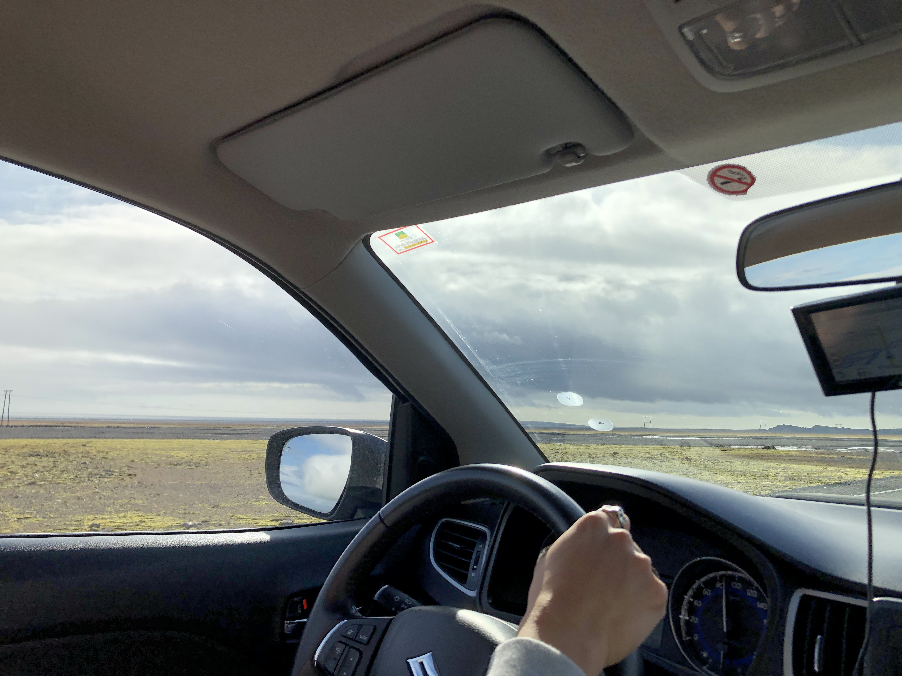
ツアーに参加する場合も、個人で動く場合も基本的に車です。
レイキャビークにはバスも発達してますが、レイキャビーク以外の都市では全く発展してません。
個人的にはツアーではなく、レンタカーを借りて好きなままに旅することをお勧めします。
気になるのはレンタカーの借り方ですかね。ちゃんと説明します！
アイスランドに行くことが決まったら、飛行機を予約すると同時にレンタカーも予約してしまいましょう。
国際免許の取得もお忘れなく！！
僕と友達が使ったレンタカー屋は#SADCARSです。空港からすぐです。
空港には各レンタカー屋へのシャトルバスが出てるので、行き先を確認して乗れば連れて行ってくれます。
着いたら手続きをして終わりです。自分達で運転して好きなとこに行くだけです！
レンタカー屋でのアクシデントは#Youtubeで話してます笑
レイキャビークにはバスも発達してますが、レイキャビーク以外の都市では全く発展してません。
個人的にはツアーではなく、レンタカーを借りて好きなままに旅することをお勧めします。
気になるのはレンタカーの借り方ですかね。ちゃんと説明します！
アイスランドに行くことが決まったら、飛行機を予約すると同時にレンタカーも予約してしまいましょう。
国際免許の取得もお忘れなく！！
僕と友達が使ったレンタカー屋は#SADCARSです。空港からすぐです。
空港には各レンタカー屋へのシャトルバスが出てるので、行き先を確認して乗れば連れて行ってくれます。
着いたら手続きをして終わりです。自分達で運転して好きなとこに行くだけです！
レンタカー屋でのアクシデントは#Youtubeで話してます笑
日本での生活では絶対に感じれないものがあります。
僕はまだ1回しか行ったことないですし、南側しか回ったことがないので、
このブログを書いてる1年後の2022の春にはもう1回行って、北側も回ってみたいです。